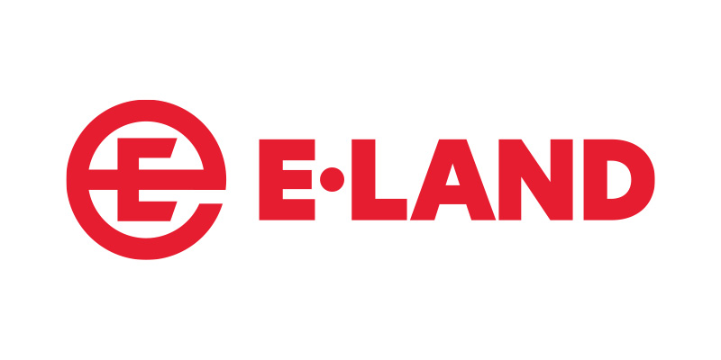

홈 > 브랜드 매거진 > 스파오
스파오
스파오(SPAO)는 이랜드월드가 2009년 론칭한 대한민국의 SPA(제조유통일괄) 패션 브랜드다. 전 연령을 겨냥한 합리적 가격의 베이직과 캐릭터 협업으로 알려진 토종 SPA다.
산업 분야 패션·럭셔리 · 공개 등급 자료 기반 · 브랜드 평가 4.2 ★

한눈에 보는 브랜드
스파오(SPAO)는 이랜드월드가 2009년 론칭한 대한민국의 SPA(제조유통일괄) 패션 브랜드다. 전 연령을 겨냥한 합리적 가격의 베이직과 캐릭터 협업으로 알려진 토종 SPA다.
브랜드 관점
스파오는 이랜드의 토종 SPA로, 캐릭터·IP 협업과 전 연령 베이직으로 차별화한 브랜드다. 설립·운영 주체, 핵심 제품, 시장 포지션을 함께 보면 패션·럭셔리 안에서의 위치가 또렷해진다.
브랜드 아이덴티티
스파오의 정체성은 합리적인 가격대, 베이식 캐주얼, 캐릭터 협업, 넓은 매장 접근성에서 형성됩니다.
확장 지식
2009년 이랜드 그룹이 론칭한 토종 SPA로 캐릭터·IP 협업을 적극 전개한다.
제품과 서비스
이너웨어·베이직 의류와 시즌 아이템, 캐릭터 협업 컬렉션을 전개한다. 잠옷·맨투맨 등 베이직 라인이 핵심이다.
사람들
운영사는 이랜드월드다.
현재 상태
타임라인
정리된 연도형 이벤트가 없습니다.
BI/CI 변천사
함께 읽을 브랜드

패션·럭셔리 · 자료 기반이랜드이랜드(E-Land Group)는 패션에서 출발해 유통·외식·레저로 확장한 한국의 종합 기업집단으로, 1980년 창업했다.
 패션·럭셔리 · 자료 기반탑텐
패션·럭셔리 · 자료 기반탑텐탑텐(TOPTEN10)은 신성통상이 2012년 론칭한 대한민국의 SPA 패션 브랜드다. 가성비와 전국 다점포 유통을 기반으로 빠르게 성장한 토종 SPA다.
패션·럭셔리 · 편집 검수구찌구찌는 이탈리아의 패션·럭셔리 브랜드로, 소재, 실루엣, 로고, 컬렉션 운영이 취향과 지위 신호를 만드는 영역입니다.
패션·럭셔리 · 자료 기반Springfield스프링필드(Springfield)는 스페인 텐담 그룹이 1988년 창설한 캐주얼 의류 브랜드이다.
AE
아더에러
패션·럭셔리 · 자료 기반아더에러아더에러(ADER ERROR)는 2014년 출범한 대한민국의 컨템포러리 패션 브랜드다. 익명의 디자이너 콜렉티브가 운영하며 그래픽·유니섹스 실루엣과 다양한 협업으로...
패션·럭셔리 · 자료 기반Vero Moda베로 모다(Vero Moda)는 덴마크 베스트셀러 그룹이 1987년 선보인 젊은 여성을 위한 패션 의류 브랜드이다.
디스
디스이즈네버댓
패션·럭셔리 · 디렉토리디스이즈네버댓디스이즈네버댓는 패션·럭셔리 브랜드로, 소재, 실루엣, 로고, 컬렉션 운영이 취향과 지위 신호를 만드는 영역입니다.
떠그
떠그클럽
패션·럭셔리 · 디렉토리떠그클럽떠그클럽는 패션·럭셔리 브랜드로, 소재, 실루엣, 로고, 컬렉션 운영이 취향과 지위 신호를 만드는 영역입니다.